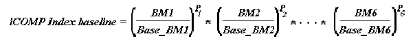
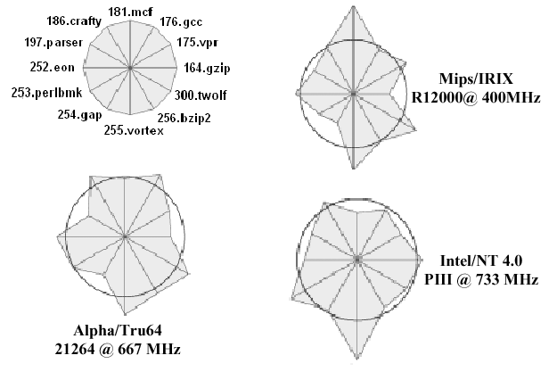
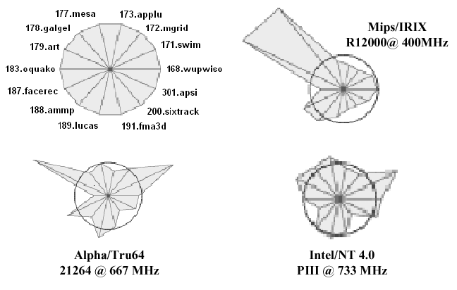
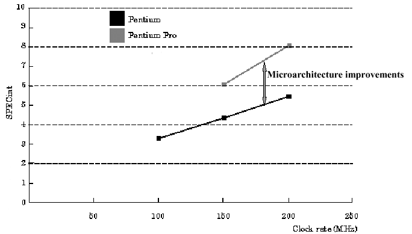
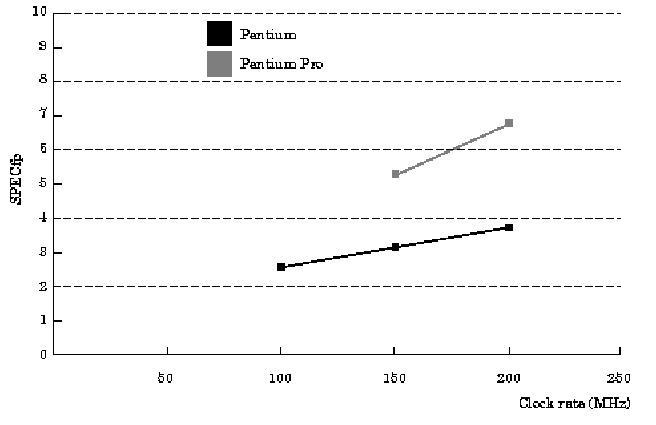

Reading Assignments and Exercises
As we discussed in Section 1.5, a benchmark is a program that is used to measure a computer system's performance in a more-or-less standardized way. We aspire to standard benchmarks because of the need for realism and reproducibility in performance testing. In the ideal situation, one can test a processor using a representative sample of real workload. In practice, one first characterizes the working set of programs statistically (e.g., number of operations of each type), then computes the time each program requires, based on the sum of the product CPIi · ICi over all instruction types.
We next overview different types of benchmarks and how they have been, or are, used in practice.
The Linpack benchmark is an old, well-established measure of CPU and ALU performance that measures the time required to solve a dense system of linear equations. In FORTRAN, the Linpack kernal resembles the following loop:
DO 10 I = 1,N
DY(i) = DY(i) + DA * DX(i)
10 CONTINUE
Here, the "D" that precedes each variable denotes a double-precision operand. As a result, the Linpack benchmark challenges the ALU and control unit primarily. However, I/O is also challenged, due to the large data requirement associated with the vectors DX and DY.
Linpack has the following measures (also called metrics):
You can read more about the Linpack benchmark at http://www.top500.org/.
The iCOMP index is a geometric mean of relative performance measures (recall from Section 1.5 how geometric means work well with ratio-based metrics [also called ratiometric quantities]). The benchmark contains a mix of instructions that are assumed to characterize existing and emerging software. The iCOMP benchmark seems to be more relevant as the use of 3D graphics, multimedia, and Internet access increases.
iCOMP 3.0 has the following composition, with weighting indicated in percent:
The preceding six benchmark results are combined as follows. Let the ratio BMi/Base_BMi denote the i-th benchmark performance, where BM denotes the benchmark run on a test processor, and Base_BM denotes the benchmark run on a baseline processor, in this case a Pentium II clocked at 350 MHz. The iCOMP benchmark is computed as:

where Pi denotes a weighted exponent that incorporates the 1/6 power (root) that comprises the outer operation of the geometric mean. Thus, the iCOMP index is a weighted geometric mean of application-specific performance ratios.
The System Performance Evaluation Corporation (SPEC) benchmarks are upgraded every 2-3 years, to account for the characteristics of software as program designs evolve. For example, longer run time, larger problems, and greater diversity of applications characterize newer software. The SPEC2000 benchmark has both baseline and optimized measures, comprised of the geometric mean of normalized execution times. The reference machine for SPEC2000 is a Sun Ultra5_10 (300 MHz SPARC architecture with 256MB of memory).
The current SPEC2000 suite is comprised of the following 12 integer and 14 floating point (FP) programs, which measure response time and throughput:
164.gzip (C, integer) - Compression
175.vpr (C, integer) - FPGA circuit placement and routing
176.gcc (C, integer) - C programming language compiler
181.mcf (C, integer) - Combinatorial optimization
186.crafty (C, integer) - Chess game
197.parser (C, integer) - Word/language processing
252.eon (C++, integer) - Computer visualization
253.perlbmk (C, integer) - PERL programming language
254.gap (C, integer ) - Group theory, interpreter
255.vortex (C, integer) - Object-oriented database
256.bzip2 (C, integer ) - Another compression program
300.twolf (C, integer ) - Place and route simulator
168.wupwise (Fortran-77, FP) - Physics/quantum chromodynamics
171.swim (Fortran-77, FP) - Shallow water circulation modelling
172.mgrid (Fortran-77, FP) - Multigrid solver: 3D potential field
173.applu (Fortran-77, FP) - Parabolic/elliptical PDEs
177.mesa (C, FP) - 3D graphics library
178.galgel (Fortran-90, FP) - Computational fluid dynamics
179.art (C, FP) - Image recognition/neural networks
183.equake (C, FP) - Seismic wave propagation simulation
187.facerec (Fortran-90, FP) - Image processing: Face recognition
188.ammp (C, FP) - Computational chemistry
189.lucas (Fortran-90, FP) - Number theory/Primality testing
191.mfa3d (Fortran-90, FP) - Finite-element crash simulation
200.sixtrack (Fortran-77, FP) - High energy nuclear physics accelerator design
301.apsi (Fortran-77, FP) - Meteorology: Pollutant distribution
SPEC2000 metrics derived from the integer benchmarks (#1-12, above) include:
SPECint2000: The geometric mean of 12 normalized
ratios when each benchmark is compiled in highly optimized
mode (also called aggressive optimization)
SPECint_base2000: The geometric mean of 12 normalized
ratios when compiled with normal optimization (also called
conservative optimization)
SPECint_rate2000: The geometric mean of 12
normalized throughput ratios when compiled with
aggressive optimization
SPECint_rate_base2000: The geometric mean of 12
normalized throughput ratios when compiled with
conservative optimization
There is also a similar set of floating point metrics.
The results of the SPEC2000 integer benchmarks are
shown in Figure 1.32, where the circle denotes the geometric mean, and
the spokes of the wheel whose rim is the circle denote individual
benchmarks keyed positionally to the diagram in the upper left-hand
corner. Note that the Mips processor with IRIX operating system performs
significantly worse than the mean on 181.mcf
(combinatorial optimization), and the three processors all perform
worse than the mean on 255.vortex (object-oriented
database) and 252.eon (computer visualization). Since
databases and visualization involve significant I/O, and visualization
involves significant amounts of graphics, it would be reasonable to
suggest that these areas need improvement in each of the three
processors tested.

Figure 1.32. Test results for the SPEC2000 integer benchmarks
run on three processors, with key in the upper left hand corner,
after [Maf01].
The floating-point benchmarks shown in Figure 1.33
reveal similar discrepancies. For example, all processor perform
relatively poorly on the 179.art (neural net) benchmark,
which involves significant amounts of multiplication and division by
small magnitudes. It is interesting to note that, in both the integer
and floating point benchmark suites, the Intel Pentium III processor
appears to have the most uniform performance (largest number of
benchmark results closest to the mean). Since Intel is a contributor
to the SPEC benchmark suite, it is not surprising that their
processors could be designed to perform well on these established
benchmarks.

Figure
1.33. Test results for the SPEC2000 floating point benchmarks run
on three processors, with key in the upper left hand corner, after
[Maf01].
When the geometric means (of the SPEC95 integer and floating-point benchmarks) are respectively graphed as a function of clock rate, we have the results shown in Figures 1.34 and 1.35. Note that (a) SPEC95 is similar to SPEC2000, and (b) the performance of the Pentium Pro exceeds that of the Pentium due to microarchitecture improvements.

Figure
1.34. Graph of SPEC95 integer benchmark performance as a function of
processor clock rate in MHz,
adapted from [Maf01].
It can also be seen that the improvement in performance carries through to the floating point computations, as shown in Figure 1.35. However, the slope of the floating point benchmark curve for the Pentium is not as great as that for the integer benchmark. This could imply (depending on the statistical significance of the measurements) that the Pentium processor does not yield improvements as readily for floating point computations as it does for integer computations.

Figure 1.35. Graph of SPEC95 floating point benchmark
performance as a function of processor clock rate in MHz, adapted from
[Maf01].
The speed of a processor in millions of instructions per second (MIPS) can be estimated as:
MIPS = IC / (106 · tcpu) ,
where tcpu denotes CPU time. Unfortunately, due to different behavior characteristics of various processors (e.g., as shown in Figures 1.32 and 1.33) 1 MIPS on a given processor may not mean the same thing as 1 MIPS on another processor. In particular, MIPS is based heavily on instruction count (IC). This is like determining the winner of an auto race by who used fewer RPMs, or the winner of a marathon by who took fewer steps when running.
In practice, MIPS is especially misleading because floating point computations are done differently on different systems. For example, some computers do FP operations in software, while others use dedicated hardware units on- or off-chip. Also, the MIPS benchmark does not factor in the instruction mix, and thus compromises realistic characterization of workload.
The only situation where MIPS might be a useful benchmark is when the majority of variables have been fixed - for example, when comparing two processors from the same vendor that support the same ISA using the same compiler or the same benchmark suite. Apart from that, MIPS should be avoided as a measure of processor performance.
When applying benchmarks to processors, one should avoid making the following mistakes:
Ignoring Amdahl's Law occurs when one tries to recursively optimize a processor, and puts much effort into the optimization process, only to achieve diminishing returns. Instead, one should optimize the common case first, then determine via a mathematical model such as Amdahl's Law whether or not further optimization is cost-effective.
Using MIPS as a performance metric is a common mistake, especially when one is in a hurry to portray a processor's performance in a favorable way. Instead, standard or well-established suites of benchmarks (such as the SPEC or iCOMP suite) should be applied to the processor, to highlight performance deficits in several categories.
Using the Arithmetic Mean of normalized CPU times is erroneous mathematically because the normalized CPU times are ratiometric quantities. As such, they cannot be combined into an ensemble statistic using the Arithmetic Mean. Instead, the Geometric Mean must be employed to combine ratiometric quantities.
Using "hardware-independent" measures such as code size defeats the purpose of hardware performance testing, namely, to highlight the specific advantages and deficits of a given processor. If the benchmark is hardware-independent, then it cannot produce information that is specific to a given architecture or processor. Instead, a suite of benchmarks such as SPEC or iCOMP should be used to identify hardware-specific performance deficits.
Assuming that synthetic benchmarks predict real performance is a major but common error. Recall from our discussion in Section 1.5, that synthetic benchmarks are programs devised by algorithm or hardware designers to measure specific types of performance on highly focused types of operation mixes. Because these benchmarks often bear little or no resemblance to real programs, they are of little use in characterizing a processor's performance in practical applications. Instead, a suite of benchmarks that is comprised of practical programs, such as SPEC or iCOMP, should be used.
Assuming that the geometric mean of CPU time ratios is proportional to the total execution time is erroneous for two reasons. First, the arithmetic mean, which is based on a sum, is proportional to total time. The geometric mean is based on a product and is thus not proportional to an accumulated (summed) total measure. Second, the CPU time is only part of the total execution time. Other factors that influence total time are I/O activity, wait time in a multiprocessor system, and network overhead in a parallel or distributed computing system.
In summary, performance measures are specific to a given program or suite of programs. CPU time is the only adequate measure of CPU performance - other metrics, such as I/O time or total time factor in effects that are not properly associated with the CPU (although they may be associated with a computer system). For a given ISA, performance increases result from (a) increases in clock rate, (b) improvements in processor architecture that reduce CPI, and (c) compiler enhancements that reduce IC (and, possibly, CPI) for a given type of instruction. The ideal benchmark is the workload that you plan to run on a given processor: all other assumptions about benchmarks can lead to unrealistic performance figures.
This concludes our overview of introductory material, computer abstractions, and hardware/software technology. We next discuss instruction set architecture, specific machines, and number representations.